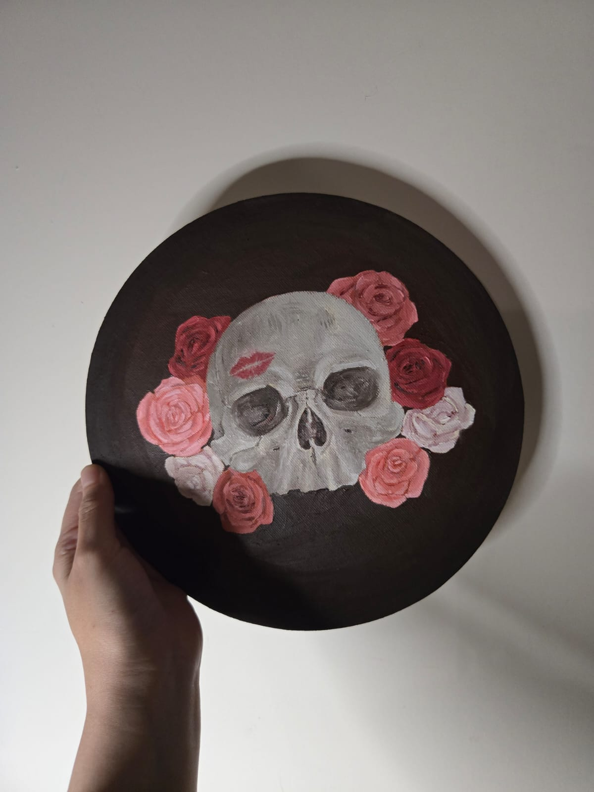
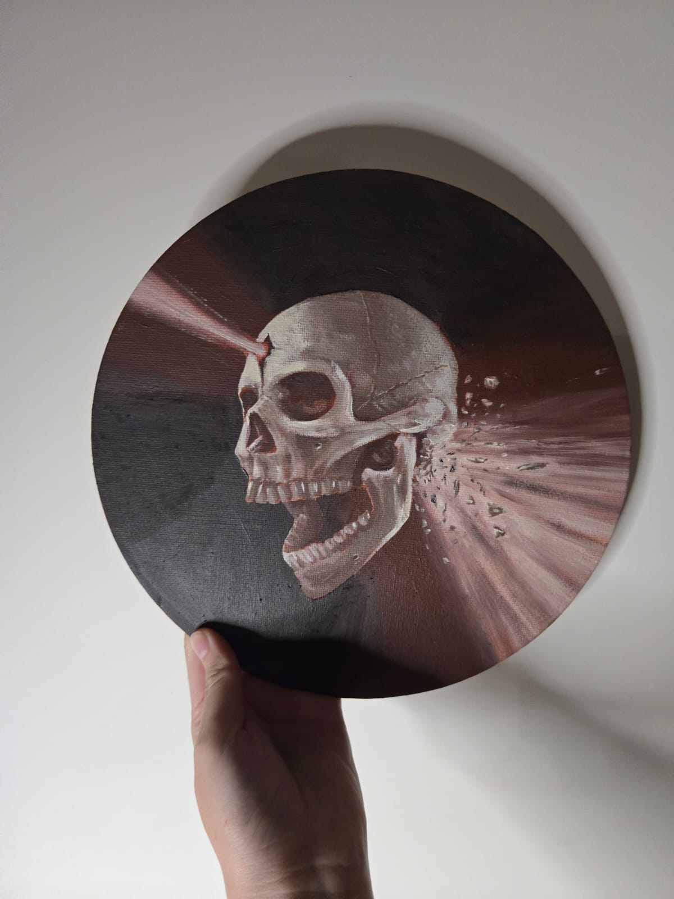

Illustration
Tradicional illustrationArtwork DigitizationDry mediumWatercolorGouache
Illustration projects
Collection of personal projects and illustration work created in both traditional and digital media. Includes pet portraits, animal studies, and experimental projects, and pieces developed for a variety of applications.





